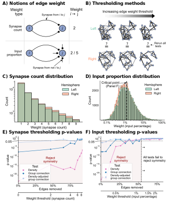

Comparing edge weight thresholds#
Show code cell source
import datetime
import time
import matplotlib as mpl
import matplotlib.pyplot as plt
import networkx as nx
import numpy as np
import pandas as pd
import seaborn as sns
from matplotlib.patches import Circle, FancyArrowPatch
from pkg.data import load_network_palette, load_unmatched
from pkg.io import FIG_PATH, get_environment_variables
from pkg.io import glue as default_glue
from pkg.io import savefig
from pkg.plot import (
SmartSVG,
merge_axes,
rainbowarrow,
set_theme,
soft_axis_off,
svg_to_pdf,
)
from pkg.stats import erdos_renyi_test, stochastic_block_test
from pkg.utils import remove_group, sample_toy_networks
from scipy.interpolate import interp1d
from svgutils.compose import Figure, Panel, Text
from tqdm import tqdm
_, _, DISPLAY_FIGS = get_environment_variables()
FILENAME = "thresholding_tests"
FIG_PATH = FIG_PATH / FILENAME
def glue(name, var, **kwargs):
default_glue(name, var, FILENAME, **kwargs)
def gluefig(name, fig, **kwargs):
savefig(name, foldername=FILENAME, **kwargs)
glue(name, fig, figure=True)
if not DISPLAY_FIGS:
plt.close()
t0 = time.time()
set_theme()
Environment variables:
RESAVE_DATA: true
RERUN_SIMS: true
DISPLAY_FIGS: False
Show code cell source
network_palette, NETWORK_KEY = load_network_palette()
left_adj, left_nodes = load_unmatched("left", weights=True)
right_adj, right_nodes = load_unmatched("right", weights=True)
neutral_color = sns.color_palette("Set2")[2]
GROUP_KEY = "celltype_discrete"
left_labels = left_nodes[GROUP_KEY].values
right_labels = right_nodes[GROUP_KEY].values
Show code cell source
fig, axs = plt.subplots(2, 1, figsize=(4, 5), gridspec_kw=dict(hspace=0))
set_theme(font_scale=1)
source_loc = (0.25, 0.5)
target_loc = (0.75, 0.5)
radius = 0.05
dim_color = "black"
dark_color = "black"
def draw_synapse_end(rad_factor, color="black"):
rad = np.pi * rad_factor
x = np.cos(rad)
y = np.sin(rad)
scale_factor = 1.6
x *= radius * scale_factor
y *= radius * scale_factor
x += target_loc[0]
y += target_loc[1]
c = Circle((x, y), radius=0.0125, color=color)
ax.add_patch(c)
def draw_synapse(source_loc, connection_rad=0, end_rad=0, color="black"):
fa = FancyArrowPatch(
posA=source_loc,
posB=target_loc,
connectionstyle=f"arc3,rad={connection_rad}",
shrinkB=30,
color=color,
)
ax.add_patch(fa)
draw_synapse_end(end_rad, color=color)
def draw_neurons():
source_circle = Circle(
(source_loc),
radius=radius,
facecolor=neutral_color,
edgecolor="black",
linewidth=2,
zorder=10,
)
ax.add_patch(source_circle)
ax.text(*source_loc, r"$i$", zorder=11, va="center", ha="center")
target_circle = Circle(
(target_loc),
radius=radius,
facecolor=neutral_color,
edgecolor="black",
linewidth=2,
zorder=10,
)
ax.add_patch(target_circle)
ax.text(*target_loc, r"$j$", zorder=11, va="center", ha="center")
def set_lims(ax):
ax.set_xlim(0.19, 0.81)
ax.set_ylim(0.3, 0.7)
ax = axs[0]
ax.text(0.93, 0.5, 2, fontsize="large", va="center", ha="center")
soft_axis_off(ax)
ax.set_ylabel("Synapse\ncount", rotation=0, ha="right", va="center", labelpad=20)
draw_neurons()
draw_synapse(source_loc, connection_rad=-0.5, end_rad=0.75)
draw_synapse(source_loc, connection_rad=0.5, end_rad=-0.75)
set_lims(ax)
ax.annotate(
r"Synapse from $i$ to $j$",
(0.5, 0.63),
xytext=(40, 25),
textcoords="offset points",
ha="center",
arrowprops=dict(arrowstyle="-|>", facecolor="black", relpos=(0.25, 0)),
fontsize="small",
)
ax = axs[1]
ax.text(0.93, 0.5, "2 / 5", fontsize="large", va="center", ha="center")
soft_axis_off(ax)
ax.set_ylabel("Input\nproportion", rotation=0, ha="right", va="center", labelpad=20)
draw_neurons()
draw_synapse(source_loc, connection_rad=-0.5, end_rad=0.75)
draw_synapse(source_loc, connection_rad=0.5, end_rad=-0.75)
dist = 0.15
draw_synapse(
(target_loc[0], target_loc[1] + dist),
connection_rad=0,
end_rad=0.5,
color=dim_color,
)
draw_synapse(
(target_loc[0] - dist, target_loc[1]),
connection_rad=0,
end_rad=1,
color=dim_color,
)
draw_synapse(
(target_loc[0], target_loc[1] - dist),
connection_rad=0,
end_rad=-0.5,
color=dim_color,
)
set_lims(ax)
ax.annotate(
r"Synapse from not $i$ to $j$",
(0.75, 0.4),
xytext=(-10, -50),
textcoords="offset points",
ha="right",
arrowprops=dict(arrowstyle="-|>", facecolor="black", relpos=(0.75, 1)),
fontsize="small",
)
fig.set_facecolor("w")
fig.text(0.07, 0.89, "Weight\n type", fontsize="large", ha="right")
fig.text(0.97, 0.89, "Weight\n" + r"$i \rightarrow$ j", fontsize="large")
border_color = "lightgrey"
line1 = mpl.lines.Line2D(
(-0.25, 1.2),
(0.5, 0.5),
transform=fig.transFigure,
color=border_color,
linewidth=1.5,
)
line2 = mpl.lines.Line2D(
(0.95, 0.95),
(0.15, 0.85),
transform=fig.transFigure,
color=border_color,
linewidth=1.5,
)
line3 = mpl.lines.Line2D(
(0.1, 0.1),
(0.15, 0.85),
transform=fig.transFigure,
color=border_color,
linewidth=1.5,
)
fig.lines = (line1, line2, line3)
gluefig("weight_notions", fig)
Show code cell source
rng = np.random.default_rng(8888)
A1, A2, node_data = sample_toy_networks()
node_data["labels"] = np.ones(len(node_data), dtype=int)
palette = {1: sns.color_palette("Set2")[2]}
g1 = nx.from_numpy_array(A1)
g2 = nx.from_numpy_array(A2)
pos1 = nx.kamada_kawai_layout(g1)
pos2 = nx.kamada_kawai_layout(g2)
def weight_adjacency(A, scale=6):
A = A.copy()
sources, targets = np.nonzero(A)
for source, target in zip(sources, targets):
# weight = rng.poisson(scale)
weight = rng.uniform(1, 10)
A[source, target] = weight
return A
def layoutplot(
g,
pos,
nodes,
ax=None,
figsize=(10, 10),
weight_scale=1,
node_alpha=1,
node_size=300,
palette=None,
edge_alpha=0.4,
edge_color="black",
):
if ax is None:
fig, ax = plt.subplots(1, 1, figsize=figsize)
edgelist = g.edges()
weights = np.array([g[u][v]["weight"] for u, v in edgelist])
weights *= weight_scale
nx.draw_networkx_nodes(
g,
pos,
nodelist=nodes.index,
node_color=nodes["labels"].map(palette),
edgecolors="black",
alpha=node_alpha,
node_size=node_size,
ax=ax,
)
nx.draw_networkx_edges(
g,
pos,
edgelist=edgelist,
nodelist=nodes.index,
width=weights,
edge_vmin=-3,
edge_vmax=9,
edge_color=weights,
edge_cmap=mpl.colormaps["binary"],
alpha=edge_alpha,
ax=ax,
node_size=node_size,
)
soft_axis_off(ax)
return ax
set_theme(font_scale=1.75)
fig, axs = plt.subplots(
4,
3,
figsize=(12, 10),
constrained_layout=True,
gridspec_kw=dict(height_ratios=[0.5, 1, 0.25, 1], hspace=0, wspace=0),
)
A1 = weight_adjacency(A1)
A2 = weight_adjacency(A2)
kwargs = dict(
palette=palette, edge_alpha=1, edge_color=(0.65, 0.65, 0.65), weight_scale=0.75
)
thresholds = [1, 4, 7]
for i in range(3):
A1[A1 < thresholds[i]] = 0
A2[A2 < thresholds[i]] = 0
g1 = nx.from_numpy_array(A1)
g2 = nx.from_numpy_array(A2)
ax = axs[1, i]
layoutplot(g1, pos1, node_data, ax=ax, **kwargs)
ax = axs[3, i]
layoutplot(g2, pos2, node_data, ax=ax, **kwargs)
ax = merge_axes(fig, axs, rows=0)
rainbowarrow(ax, start=(0.1, 0.5), end=(0.9, 0.5), cmap="Greys", n=1000, lw=30)
ax.set(ylim=(0.4, 0.8), xlim=(0, 1))
ax.set_title("Increasing edge weight threshold", fontsize="large", y=0.5)
ax.axis("off")
def draw_comparison(ax):
ax.text(
0.48, 0.35, r"$\overset{?}{=}$", fontsize="xx-large", ha="center", va="center"
)
ax.set(ylim=(0, 1), xlim=(0, 1))
ax.axis("off")
ax = axs[2, 0]
draw_comparison(ax)
ax = axs[2, 1]
draw_comparison(ax)
ax = axs[2, 2]
draw_comparison(ax)
ax.annotate(
"Rerun all\n tests",
(0.6, 0.6),
xytext=(45, 0),
textcoords="offset points",
arrowprops=dict(arrowstyle="-|>", facecolor="black"),
fontsize="medium",
va="center",
)
axs[1, 0].set_ylabel(
"Left",
color=network_palette["Left"],
size="large",
rotation=0,
ha="right",
labelpad=10,
)
axs[3, 0].set_ylabel(
"Right",
color=network_palette["Right"],
size="large",
rotation=0,
ha="right",
labelpad=10,
)
fig.set_facecolor("w")
gluefig("thresholding_methods", fig)
Show code cell source
def construct_weight_data(left_adj, right_adj):
indices = np.nonzero(left_adj)
left_weights = left_adj[indices]
indices = np.nonzero(right_adj)
right_weights = right_adj[indices]
labels = np.concatenate(
(len(left_weights) * ["Left"], len(right_weights) * ["Right"])
)
weights = np.concatenate((left_weights, right_weights))
weight_data = pd.Series(data=weights, name="weights").to_frame()
weight_data["labels"] = labels
return weight_data
weight_data = construct_weight_data(left_adj, right_adj)
weight_data = weight_data[weight_data["weights"] < 10]
set_theme(font_scale=1.25)
fig, ax = plt.subplots(1, 1, figsize=(8, 5))
sns.histplot(
data=weight_data,
x="weights",
hue="labels",
palette=network_palette,
ax=ax,
discrete=True,
cumulative=False,
)
sns.move_legend(ax, loc="upper right", title="Hemisphere")
ax.set(xlabel="Weight (synapse count)")
ax.set(xticks=np.arange(1, 10))
ax.set_yscale("log")
gluefig("synapse_weight_histogram", fig)
Show code cell source
d_key = "Density"
gc_key = "Group connection"
dagc_key = "Density-adjusted\ngroup connection"
def binarize(A, threshold=None):
# threshold is the smallest that is kept
B = A.copy()
if threshold is not None:
B[B < threshold] = 0
return B
rows = []
thresholds = np.arange(1, 10)
for threshold in tqdm(thresholds):
left_adj_thresh = binarize(left_adj, threshold=threshold)
right_adj_thresh = binarize(right_adj, threshold=threshold)
p_edges_removed = 1 - (
np.count_nonzero(left_adj_thresh) + np.count_nonzero(right_adj_thresh)
) / (np.count_nonzero(left_adj) + np.count_nonzero(right_adj))
stat, pvalue, misc = erdos_renyi_test(left_adj_thresh, right_adj_thresh)
row = {
"threshold": threshold,
"stat": stat,
"pvalue": pvalue,
"method": d_key,
"p_edges_removed": p_edges_removed,
}
rows.append(row)
for adjusted in [False, True]:
if adjusted:
method = dagc_key
else:
method = gc_key
stat, pvalue, misc = stochastic_block_test(
left_adj_thresh,
right_adj_thresh,
left_labels,
right_labels,
density_adjustment=adjusted,
)
row = {
"threshold": threshold,
"adjusted": adjusted,
"stat": stat,
"pvalue": pvalue,
"method": method,
"p_edges_removed": p_edges_removed,
}
rows.append(row)
integer_results = pd.DataFrame(rows)
100%|| 9/9 [00:10<00:00, 1.15s/it]
Show code cell source
def add_alpha_line(ax):
ax.axhline(0.05, color="black", linestyle=":", zorder=-1)
ax.annotate(
r"0.05",
(ax.get_xlim()[0], 0.05),
xytext=(-45, -15),
textcoords="offset points",
arrowprops=dict(arrowstyle="-", color="black"),
clip_on=False,
ha="right",
)
Show code cell source
def plot_thresholding_pvalues(
results, weight, figsize=(8, 6), no_reject_x=None, reject_x=None
):
set_theme(font_scale=1.25)
fig, ax = plt.subplots(1, 1, figsize=figsize)
colors = sns.color_palette("tab20")
palette = dict(zip([gc_key, dagc_key, d_key], [colors[0], colors[1], colors[12]]))
sns.scatterplot(
data=results,
x="p_edges_removed",
y="pvalue",
hue="method",
palette=palette,
ax=ax,
legend=True,
)
sns.lineplot(
data=results,
x="p_edges_removed",
y="pvalue",
hue="method",
palette=palette,
ax=ax,
legend=False,
)
ax.set(
yscale="log",
ylabel="p-value",
xlabel="Edges removed",
yticks=np.geomspace(1, 1e-20, 5),
)
# just pick any method because these are the same for each
single_results = results[results["method"] == "Density"]
x = single_results["p_edges_removed"]
y = single_results["threshold"]
ax.set_xlim((x.min(), x.max()))
ax.tick_params(axis="both", length=5)
ax.set_xticks([0, 0.25, 0.5, 0.75])
ax.set_xticklabels(["0%", "25%", "50%", "75%"])
# basically fitting splines to interpolate linearly between points we checked
prop_to_thresh = interp1d(
x=x, y=y, kind="slinear", bounds_error=False, fill_value=(0, 1)
)
thresh_to_prop = interp1d(
x=y, y=x, kind="slinear", bounds_error=False, fill_value=(0, 1)
)
ax2 = ax.secondary_xaxis(-0.2, functions=(prop_to_thresh, thresh_to_prop))
if weight == "input_proportion":
ax2.set_xticks([0.005, 0.01, 0.015, 0.02])
ax2.set_xticklabels(["0.5%", "1%", "1.5%", "2%"])
ax2.set_xlabel("Weight threshold (input percentage)")
elif weight == "synapse_count":
ax2.set_xlabel("Weight threshold (synapse count)")
ax2.tick_params(axis="both", length=5)
add_alpha_line(ax)
sns.move_legend(
ax,
"lower left",
title="Test",
frameon=True,
fontsize="small",
ncol=1,
labelspacing=0.3,
)
# shading
ax.autoscale(False)
if no_reject_x is None:
no_reject_x = ax.get_xlim()[1]
ax.fill_between(
(ax.get_xlim()[0], no_reject_x),
y1=0.05,
y2=ax.get_ylim()[0],
color="darkred",
alpha=0.05,
)
if reject_x is None:
reject_x = np.mean(ax.get_xlim())
y = np.mean(np.sqrt(np.product(ax.get_ylim())))
ax.text(
reject_x,
y,
"Reject\nsymmetry",
ha="center",
va="center",
color="darkred",
)
return fig, ax
Show code cell source
fig, ax = plot_thresholding_pvalues(integer_results, "synapse_count")
gluefig("synapse_threshold_pvalues_legend", fig)
ax.get_legend().remove()
gluefig("synapse_threshold_pvalues", fig)
Show code cell source
### EDGE WEIGHTS AS INPUT PROPORTIONS
Show code cell source
left_input = (left_nodes["axon_input"] + left_nodes["dendrite_input"]).values
left_input[left_input == 0] = 1
left_adj_input_norm = left_adj / left_input[None, :]
right_input = (right_nodes["axon_input"] + right_nodes["dendrite_input"]).values
right_input[right_input == 0] = 1
right_adj_input_norm = right_adj / right_input[None, :]
Show code cell source
rows = []
thresholds = np.linspace(0, 0.03, 31)
for threshold in tqdm(thresholds):
left_adj_thresh = binarize(left_adj_input_norm, threshold=threshold)
right_adj_thresh = binarize(right_adj_input_norm, threshold=threshold)
p_edges_removed = 1 - (
np.count_nonzero(left_adj_thresh) + np.count_nonzero(right_adj_thresh)
) / (np.count_nonzero(left_adj) + np.count_nonzero(right_adj))
stat, pvalue, misc = erdos_renyi_test(left_adj_thresh, right_adj_thresh)
row = {
"threshold": threshold,
"stat": stat,
"pvalue": pvalue,
"method": d_key,
"p_edges_removed": p_edges_removed,
}
rows.append(row)
for adjusted in [False, True]:
if adjusted:
method = dagc_key
else:
method = gc_key
stat, pvalue, misc = stochastic_block_test(
left_adj_thresh,
right_adj_thresh,
left_labels,
right_labels,
density_adjustment=adjusted,
)
row = {
"threshold": threshold,
"adjusted": adjusted,
"stat": stat,
"pvalue": pvalue,
"method": method,
"p_edges_removed": p_edges_removed,
}
rows.append(row)
input_results = pd.DataFrame(rows)
100%|| 31/31 [00:38<00:00, 1.23s/it]
Show code cell source
x = input_results[input_results["method"] == "Density"].iloc[12]["p_edges_removed"]
x_threshold = input_results[input_results["method"] == "Density"].iloc[12]["threshold"]
fig, ax = plot_thresholding_pvalues(
input_results, "input_proportion", no_reject_x=x, reject_x=np.mean((0, x))
)
ax.axvline(
x,
ax.get_ylim()[0],
0.95,
color="black",
linestyle="--",
zorder=0,
)
ax.text(
x + 0.005,
np.mean(np.sqrt(np.product(ax.get_ylim()))),
r"$\rightarrow$"
+ "\n\n\n All tests fail to\n reject symmetry\n\n\n"
+ r"$\rightarrow$",
ha="left",
va="center",
)
gluefig("input_threshold_pvalues_legend", fig)
ax.get_legend().remove()
gluefig("input_threshold_pvalues", fig)
Show code cell source
# Look at histogram
Show code cell source
weight_data = construct_weight_data(left_adj_input_norm, right_adj_input_norm)
median = np.median(weight_data["weights"])
set_theme(font_scale=1.25)
fig, ax = plt.subplots(1, 1, figsize=(8, 5))
sns.histplot(
data=weight_data,
x="weights",
hue="labels",
palette=network_palette,
ax=ax,
discrete=False,
cumulative=False,
common_norm=True,
log_scale=True,
stat="count",
bins=50,
kde=True,
)
sns.move_legend(ax, loc="upper right", title="Hemisphere")
ax.set(xlabel="Weight (input percentage)")
ax.set_xticks([1e-3, 1e-2, 1e-1, 1])
ax.set_xticklabels(["0.1%", "1%", "10%", "100%"])
ax.set_yticks([1000, 2000])
ax.tick_params(pad=10)
ax.axvline(x_threshold, 0, 0.99, color="black", linestyle="--", linewidth=4, alpha=1)
ax.annotate(
"Critical point\n(Panel F)",
(x_threshold, ax.get_ylim()[1] * 0.95),
xytext=(-50, 10),
textcoords="offset points",
ha="right",
va="top",
color="black",
arrowprops=dict(arrowstyle="-|>", facecolor="black", relpos=(1, 0.7)),
)
gluefig("input_proportion_histogram", fig)
Show code cell source
fontsize = 9
weight_notions = SmartSVG(FIG_PATH / "weight_notions.svg")
weight_notions.set_width(200)
weight_notions.move(10, 15)
weight_notions_panel = Panel(
weight_notions,
Text("A) Notions of edge weight", 5, 10, size=fontsize, weight="bold"),
)
methods = SmartSVG(FIG_PATH / "thresholding_methods.svg")
methods.set_width(200)
methods.move(10, 15)
methods_panel = Panel(
methods, Text("B) Thresholding methods", 5, 10, size=fontsize, weight="bold")
)
methods_panel.move(weight_notions.width * 0.85, 0)
synapse_hist = SmartSVG(FIG_PATH / "synapse_weight_histogram.svg")
synapse_hist.set_width(200)
synapse_hist.move(10, 15)
synapse_hist_panel = Panel(
synapse_hist,
Text("C) Synapse count distribution", 5, 10, size=fontsize, weight="bold"),
)
synapse_hist_panel.move(0, methods.height * 0.9)
input_hist = SmartSVG(FIG_PATH / "input_proportion_histogram.svg")
input_hist.set_width(200)
input_hist.move(10, 15)
input_hist_panel = Panel(
input_hist,
Text("D) Input proportion distribution", 5, 10, size=fontsize, weight="bold"),
)
input_hist_panel.move(synapse_hist.width * 0.85, methods.height * 0.9)
synapse_pvalues = SmartSVG(FIG_PATH / "synapse_threshold_pvalues_legend.svg")
synapse_pvalues.set_width(200)
synapse_pvalues.move(10, 15)
synapse_pvalues_panel = Panel(
synapse_pvalues,
Text("E) Synapse thresholding p-values", 5, 10, size=fontsize, weight="bold"),
)
synapse_pvalues_panel.move(0, (methods.height + synapse_hist.height) * 0.9)
input_pvalues = SmartSVG(FIG_PATH / "input_threshold_pvalues_legend.svg")
input_pvalues.set_width(200)
input_pvalues.move(10, 15)
input_pvalues_panel = Panel(
input_pvalues,
Text("F) Input thresholding p-values", 5, 10, size=fontsize, weight="bold"),
)
input_pvalues_panel.move(
synapse_pvalues.width * 0.85, (methods.height + synapse_hist.height) * 0.9
)
fig = Figure(
methods.width * 2 * 0.88,
(methods.height + synapse_hist.height + synapse_pvalues.height) * 0.92,
weight_notions_panel,
methods_panel,
synapse_hist_panel,
input_hist_panel,
synapse_pvalues_panel,
input_pvalues_panel,
)
fig.save(FIG_PATH / "thresholding_composite.svg")
svg_to_pdf(
FIG_PATH / "thresholding_composite.svg", FIG_PATH / "thresholding_composite.pdf"
)
fig

Show code cell source
elapsed = time.time() - t0
delta = datetime.timedelta(seconds=elapsed)
print(f"Script took {delta}")
print(f"Completed at {datetime.datetime.now()}")
Script took 0:01:05.383410
Completed at 2023-03-10 13:44:29.894814
Show code cell source
(
left_adj_input_norm_sub,
right_adj_input_norm_sub,
left_nodes_sub,
right_nodes_sub,
) = remove_group(
left_adj_input_norm, right_adj_input_norm, left_nodes, right_nodes, "KCs"
)
weight_data = construct_weight_data(left_adj_input_norm_sub, right_adj_input_norm_sub)
median = np.median(weight_data["weights"])
fig, ax = plt.subplots(1, 1, figsize=(8, 6))
sns.histplot(
data=weight_data,
x="weights",
hue="labels",
palette=network_palette,
ax=ax,
discrete=False,
cumulative=False,
common_norm=True,
log_scale=True,
stat="count",
bins=50,
kde=True,
)
sns.move_legend(ax, loc="upper right", title="Hemisphere")
ax.set(xlabel="Weight (input proportion)")
ax.axvline(x_threshold, color="black", linestyle="--", linewidth=4, alpha=1)
ax.set_title("KC-")
gluefig("input_proportion_histogram_kc_minus", fig)